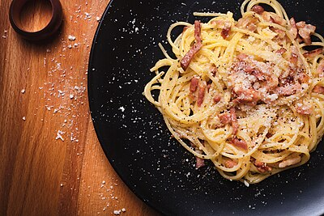
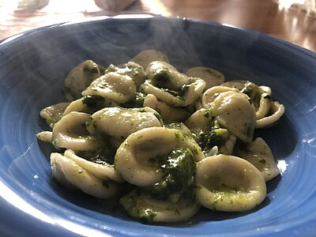
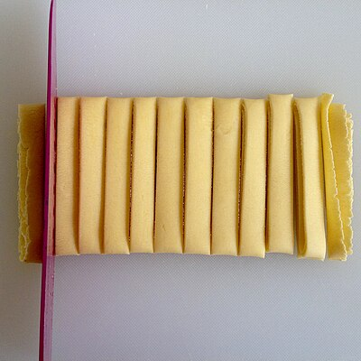
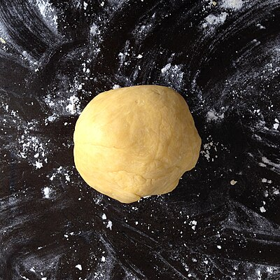
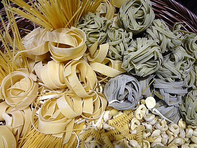
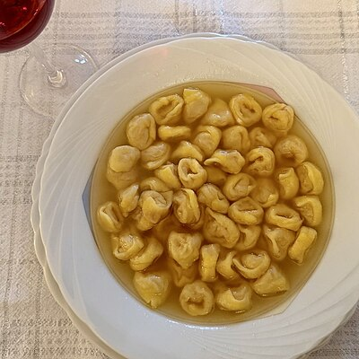
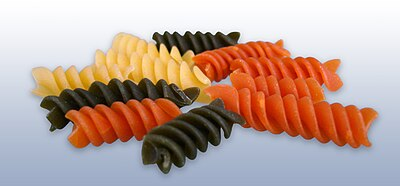
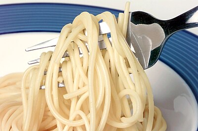

Italian pasta — shapes, sauces, and the rules that matter
Long Pasta — Strand shapes
Long pasta works best with smooth, coating sauces that cling to the strands. Chunky sauces fall off — reserve those for shapes with ridges and hollows. The thickness of the strand should match the weight of the sauce.
Short Pasta — Shapes designed to trap sauce
Short pasta shapes are engineered to hold chunky, hearty sauces in tubes, ridges, and cavities. The geometry is not decorative — each shape was designed to maximize the ratio of sauce to pasta in every bite.
Stuffed & Filled Pasta
Stuffed pasta requires fresh egg dough thin enough to reveal the filling through the translucent skin. Each region of Italy claims a different filled pasta as its own — a matter of fierce local pride.
Classic Sauces — The canon
Italian pasta sauce culture has an oral tradition of rules as strict as any legal code. Many of these rules exist for flavor reasons that become obvious once you understand them — and others exist purely because Italians are Italian.
Guanciale (cured pork cheek), Pecorino Romano, eggs, and black pepper. The fat from the guanciale, emulsified with egg and pasta water, creates the "sauce." The heat of the pasta cooks the egg just enough — never scrambled. Absolutely zero cream. This rule is enforced with regional passion.
Guanciale, San Marzano tomatoes, Pecorino Romano, white wine, and red chili flakes. From the mountain town of Amatrice (devastated by earthquake in 2016). The sauce is registered with an EU geographical indication. Served on bucatini or rigatoni.
Three ingredients: Pecorino Romano, black pepper, pasta. The art is in the technique — finely grated cheese must be emulsified with starchy pasta water and pepper-infused water to create a creamy coating sauce with no clumping. One of the most technically difficult simple dishes in cooking.
Ground beef (and sometimes pork), soffritto (onion, carrot, celery), white wine, whole milk, and a small amount of tomato. Cooked low for 3–4 hours minimum. The milk tenderizes the meat and rounds the acidity. Officially registered with the Bologna Chamber of Commerce. Served with tagliatelle.
Basil, Parmigiano-Reggiano, Pecorino Sardo, pine nuts, garlic, extra virgin olive oil. Made in a marble mortar with a wooden pestle (the name comes from pestare, to pound). Never blended — the heat of a blade bruises the basil and turns it bitter. Served at room temperature on trofie or trenette with green beans and potatoes.
San Marzano tomatoes, garlic, and generous red chili flakes (peperoncino). The name means "angry" — referring to the spice level. One of the simplest pasta sauces; its excellence depends entirely on the quality of tomatoes and olive oil. Serves with penne rigate.
Fresh clams, garlic, white wine, parsley, chili, olive oil. Two versions: in bianco (white, no tomato — the classic) and in rosso (with cherry tomatoes). The clam juice released during cooking becomes the sauce. Served on linguine or spaghetti. Clams must be fresh — briny and alive.
Sauce & Shape Pairings
The matching of pasta shape to sauce is not arbitrary — it follows culinary logic: light sauces on delicate pastas, heavy sauces on hearty shapes, chunky sauces on shapes with hollows and ridges to trap them. Italian nonnas have enforced these rules for centuries.
| Pasta Shape | Best Sauce | Why It Works |
|---|---|---|
| Spaghetti | Carbonara, cacio e pepe, aglio e olio | Round strands coat evenly with egg-based or oil-based sauces; no chunky pieces to fall off |
| Tagliatelle | Bolognese ragù | Wide ribbon surface holds meat sauce; the flat profile mimics the cutting motion of bolognese prep |
| Bucatini | All'amatriciana | Hollow tube draws sauce inside; thick walls stand up to the guanciale and tomato weight |
| Pappardelle | Wild boar / lamb ragù | Very wide surface needs equally bold, hearty sauce; delicate sauce disappears on such a large canvas |
| Linguine | Vongole (clams), seafood | Flat surface distributes delicate seafood sauce; flat shape echoes the flat shape of bivalves |
| Penne rigate | Arrabbiata, vodka sauce | Tube traps sauce inside; ridges hold extra sauce; angle cut traps even more |
| Rigatoni | Meat ragù, amatriciana | Large tube volume and deep ridges hold maximum chunky sauce; very sturdy for baking |
| Fusilli | Pesto, vegetable ragù | Spiral grooves trap chunky pieces and thick sauces in every twist |
| Orecchiette | Broccoli rabe + sausage | The cup shape physically holds crumbled sausage and small vegetables inside |
| Farfalle | Cream + peas + ham | Light cream coats the bow tie evenly; visual elegance for celebration dishes |
| Conchiglie (large) | Ricotta, baked dishes | Shell shape holds fillings for baking; medium size balances filling to pasta ratio |
| Gnocchi | Butter-sage, gorgonzola cream | Soft dumplings need coating sauces, not chunky ones; the potato base absorbs butter beautifully |
| Tortellini | In brodo (broth) | Traditional and correct — the filling flavor shows through clean broth; heavy sauce overwhelms |
| Ravioli (ricotta) | Brown butter + sage | Simple sauce lets the filling be the star; complex sauce competes with what's inside |
Cooking Tips — The technique behind great pasta
Gallery







